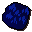
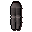
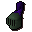

Blue dragon
| Config name | blue_dragon |
| NPC id | 55 |
| Combat level | 111 |
| Hitpoints | 105 |
| Attack / Strength / Defence | 95 / 95 / 95 |
| Respawn | 60 ticks |
| Options | Attack |
| Aggression | cowardly |
| Wander range | 4 tiles from spawn |
| Max range | 6 tiles from spawn |
| Defined in | scripts/_unpack/225/all.npc |
| Bonuses | Stab def 50, Slash def 70, Crush def 70, Magic def 60, Range def 50 |
Blue dragon
A mother dragon.
Show all 10 spawns on the world map → Open in knowledge graph →
Drops
Drop script: scripts/drop tables/scripts/blue_dragon.rs2 (specific handler)
Always dropped
| Item | Quantity | Rarity | Notes |
|---|---|---|---|
| 1 | Always | ||
 Dragonhide | 1 | Always |
Drop table
| Item | Quantity | Rarity | Notes |
|---|---|---|---|
| 44 | 29/128 (22.66%) | ||
| 132 | 25/128 (19.53%) | ||
| Herb drop table table | see table | 15/128 (11.72%) | |
| 200 | 5/64 (7.81%) | ||
| 75 | 1/16 (6.25%) | ||
| 15 | 5/128 (3.91%) | ||
| 11 | 5/128 (3.91%) | ||
| Gem drop table table | see table | 5/128 (3.91%) | |
 Steel platelegs | 1 | 1/32 (3.12%) | |
| 1 | 3/128 (2.34%) | ||
| 1 | 3/128 (2.34%) | ||
| 3 | 3/128 (2.34%) | ||
| 1 | 3/128 (2.34%) | ||
| 1 | 3/128 (2.34%) | ||
| 1 | 1/64 (1.56%) | ||
| 1 | 1/128 (0.78%) | ||
 Adamant full helm | 1 | 1/128 (0.78%) | |
| 1 | 1/128 (0.78%) | ||
| 37 | 1/128 (0.78%) | ||
| 440 | 1/128 (0.78%) |
Tertiary drops
| Item | Quantity | Rarity | Notes |
|---|---|---|---|
| Clue scroll (hard) | 1 | 1/128 (0.78%) | members |
Locations
| Area | Coordinates | Level | Count | Map |
|---|---|---|---|---|
| Gu'Tanoth (underground) | 2568, 9437 | 0 | 1 | view |
| Heros' Guild (underground) | 2908, 9905 | 0 | 1 | view |
| Taverly (underground) | 2897, 9797 | 0 | 1 | view |
| Taverly (underground) | 2899, 9802 | 0 | 1 | view |
| Taverly (underground) | 2904, 9802 | 0 | 1 | view |
| Wizards' Guild (underground) | 2579, 9445 | 0 | 1 | view |
| Wizards' Guild (underground) | 2590, 9461 | 0 | 1 | view |
| Wizards' Guild (underground) | 2592, 9431 | 0 | 1 | view |
| Wizards' Guild (underground) | 2604, 9443 | 0 | 1 | view |
| Wizards' Guild (underground) | 2609, 9459 | 0 | 1 | view |
Referenced in scripts
scripts/drop tables/scripts/blue_dragon.rs2scripts/npc/scripts/dragon.rs2